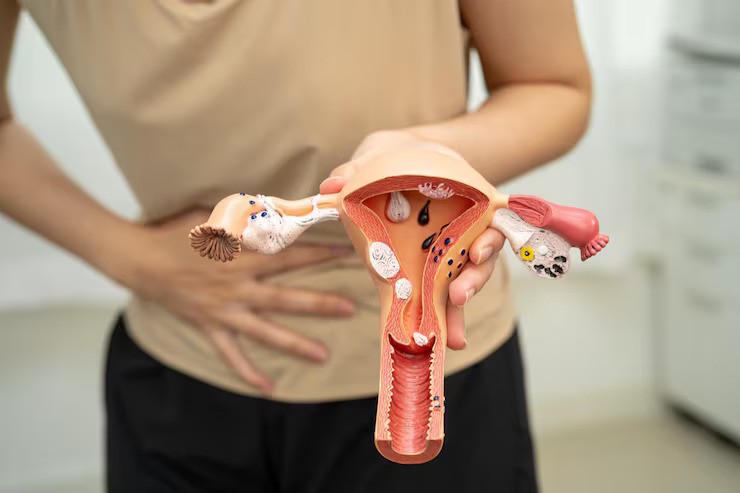
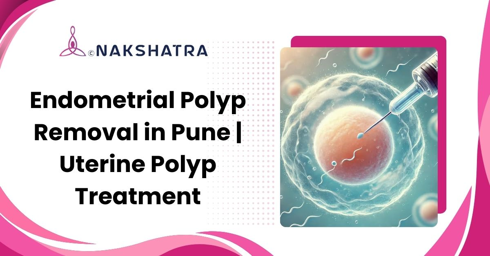
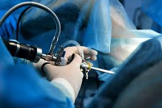
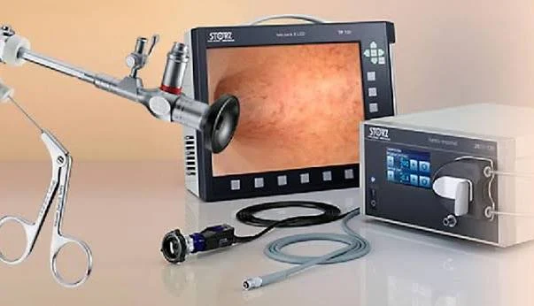
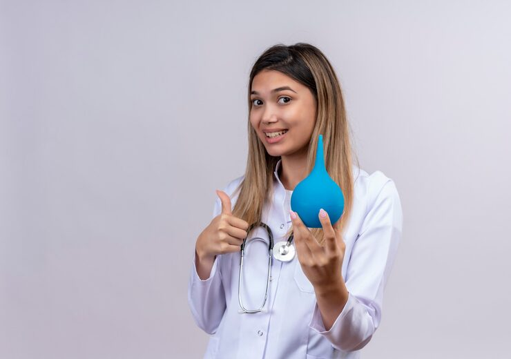

Watchful Monitoring (Observation Approach)
For small, symptom-free polyps, immediate surgery may not be necessary. Our experts monitor uterine health through periodic ultrasounds and hormonal evaluations, intervening only when needed.
Endometrial or uterine polyps can cause irregular periods, heavy bleeding, bleeding between periods, or difficulty conceiving. Nakshatra Clinic provides careful diagnosis and fertility-preserving treatment planning for women with suspected or confirmed polyps.

Ultrasound, hysteroscopy, or biopsy may be used to evaluate the uterine cavity.
Minimally invasive removal helps target polyps while protecting healthy uterine tissue.
Post-care guidance focuses on healing, recurrence prevention, and fertility goals.

At Nakshatra Clinic, Baner, Pune we understand that women's health concerns like endometrial (uterine) polyps can be both uncomfortable and worrisome. These small, non-cancerous growths in the uterus often cause symptoms such as irregular periods, heavy bleeding, or difficulty conceiving, affecting both physical and emotional well-being.
Our caring and experienced gynaecologists take the time to listen, explain, and guide you through every step of the process. Using hysteroscopic and minimally invasive treatments, we focus on safely removing polyps while preserving fertility and supporting a smooth recovery.
These are the original treatment options, redesigned as responsive cards with visible imagery and inline icons.

For small, symptom-free polyps, immediate surgery may not be necessary. Our experts monitor uterine health through periodic ultrasounds and hormonal evaluations, intervening only when needed.

Medications may help mild cases or control bleeding before surgery. Hormonal therapies can temporarily shrink polyps, though definitive removal may still be needed if symptoms recur.
Using a hysteroscope, the gynecologist visualizes the uterine cavity and precisely removes polyps without harming healthy tissue. It is a minimally invasive day-care approach with rapid recovery.

In cases involving multiple or larger polyps, or when hysteroscopy is not feasible, D&C may be performed to remove excess tissue and restore menstrual regularity.

For recurring polyps, abnormal bleeding, or postmenopausal symptoms, hysteroscopy with targeted biopsy may be recommended to rule out precancerous or cancerous changes.

For women undergoing IVF or trying to conceive naturally, even small uterine polyps can interfere with embryo implantation. Treatment is planned to protect reproductive goals.
After polyp removal, the team focuses on preventing recurrence with hormonal support, dietary guidance, lifestyle recommendations, and regular follow-ups.
Endometrial or uterine polyps are soft, non-cancerous growths on the inner uterine lining caused by hormonal imbalance, especially excess estrogen. They are more common in women approaching or after menopause. At Nakshatra Clinic, Baner, Pune we help diagnose and treat polyps early to prevent complications and restore reproductive health.
Women with endometrial polyps may experience irregular menstrual cycles, heavy bleeding, bleeding between periods, or infertility. Some women may also have no visible symptoms. Regular gynecological check-ups at Nakshatra Clinic, Baner, Pune can help detect these polyps early through imaging or hysteroscopy.
Diagnosis is done using ultrasound, hysteroscopy, or endometrial biopsy to examine the uterine cavity and confirm the presence of polyps. At Nakshatra Clinic, our advanced diagnostic tools help visualize even small or hidden polyps, ensuring accurate assessment and personalized treatment.
Yes, removal is often recommended, especially if you experience abnormal bleeding, infertility, or if the polyps appear large or irregular. Removing polyps at Nakshatra Clinic, Baner, Pune helps relieve symptoms, prevents recurrence, and lowers the risk of potential cancerous changes.
Yes. In many cases, removing endometrial polyps can increase the chances of conception since polyps may block embryo implantation. At Nakshatra Clinic, Baner, Pune our fertility-focused approach helps enhance reproductive success while maintaining uterine health.
Recovery from hysteroscopic polyp removal is generally quick. Most women can resume daily activities within a day or two. You may experience mild cramps or light bleeding for a short period. Our doctors at Nakshatra Clinic provide detailed post-care instructions for smooth healing and prevention of recurrence.
Book a consultation at Nakshatra Clinic in Baner, Pune to discuss symptoms, diagnosis, hysteroscopic polyp removal, and recovery support.